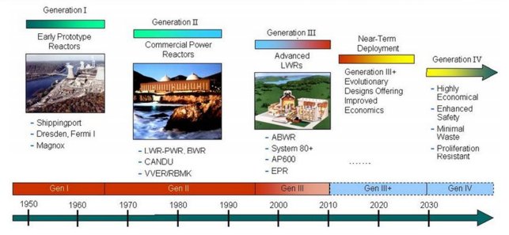
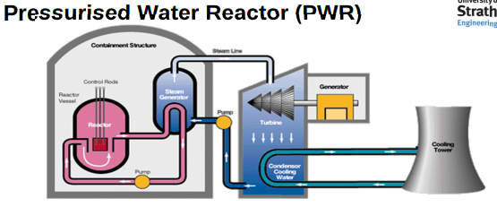
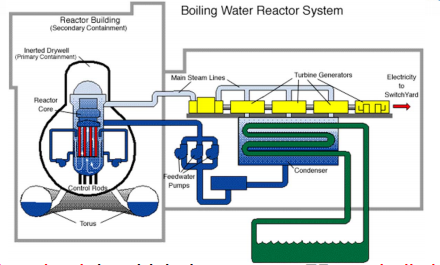
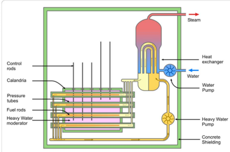
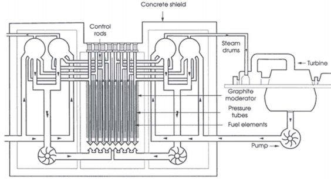

Index
- Section 0
- Section 1 - Nuclear Basics
- Lecture 1.0 - Learning outcomes and technical tour
- 1.1 Atoms and Nuclei
- 1.2 - Nuclear Structure & Nuclear Reactions
- 1.3 Isotopes and Radioactivity
- 1.4 Radiation and Interactions with MAtter
- Section 2 - Neutrons and Fission
2. Nuclear Power Plant: Generation II Reactors
Reactor Basic Components
• Fuel:
Usually Uranium "pellets" placed in tubes to form "fuel rods"
Rods are arranged in fuel assemblies in the reactor core
• Moderator:
Material to slow neutrons, Usually water.
• Control Rods:
Used to absorb neutrons.
Can be made from Boron, Cadmium, Hafnium
Inserted and removed from core to maintain critical mass
• Coolant
Liquid or Gas to transfer heat from the core]
• Pressure vessel (or tubes)
Steel vessel containing reactor core, moderator/coolant
• Steam Generator
Heat exchanger where steam is generated for turbine
• Containment
Structure around the reactor core designed to protect operators from radiation in the case of malfunction
Reactor Types
• Thermal Reactors:
Based on slow moving "thermal neutrons"
Use enriched Uranium
U-235 is expended in the reaction
• U-238 is not fissile but can transform to Pu-239 (which is fissile with fast or thermal neutrons) upon capture of a neutron.
• Breeder reactors use a fertile material such as U-238 incorporated into either the fuel or a "breeder blanket" surrounding the core
Consumes the fissile material and fertile material whilst producing new fissile material.
• PWR - Pressurised Water Reactor
a
• Developed for Naval applications
• Most common reactor type
• Enriched Uranium oxide fuel
• Uses water as both moderator and coolant.
• Pressurised so that the water does not boil (over 315*C & 150 Bar)
• Uses heat exchanger to power steam cycle.
• Normal water used
• As water temperature increases, the density decreases and therefore the moderation. This slows the reaction. (Feature makes PWR's very stable)
• PWR Fuel:
U-235 is enriched several percent
In the form of ceramic pellets placed in zirconium alloy tubes
Tubes are placed in "bundles" then used to build reactor core.
Typically 200 to 300 rods per assembly and 150 to 250 assemblies per core. (80-100 tonnes of Uranium)
• PWR Control:
Generally controlled by adjusting concentration of "Boronic Acid" in the coolant (the water)
Boron absorbs the neutrons
Control rods are used for startup / shut-down
• Advantages:
Very Stable (due to water density vs temp effect)
Water is a cheap moderator
• Disadvantages:
Must operate at high pressure, affecting structural integrity.
Can't be refuelled whilst in operation
Hot water / Boronic acid mix is corrosive to steel.
Water absorbs neutrons which means U-235 must be enriched.
• BWR - Boiling Water Reactor

• Single cooling circuit, Water boils in the core and drives turbines directly.
• Only 12-15% steam so passes through "Dryer Plates" before moving to turbines
• 90-100 fuel rods in up to 750 assemblies, ~140 tonnes of Uranium
• BWR Control:
Uses control rods entered from bottom hydraulically.
Has "Torus" or "Suppression Pool" used to remoce excess heat if large quantity of steam is produced
• Advantages:
Operates at substantially lower pressure than PWR
Pressure vessel subjected to signiicantly less radiation than PWR, improving its lifespan.
Operates at a lower temperature than PWR
• Disadvantages
Complexity - 2 phase fluid flow (liquid & vapour). More "in-core" instrumentation is required
Much larger pressure vessel required than PWR for similar power output
Contamination of turbine. (less of a factor with modern tech.)#
Shielding of the turbines is required.
Control rods entering from below prevents failsafe shutdown in event of hydraulic failure
• CANDU - Canada Deuterium Uranium

• Uses natural Uranium as fuel (0.7% U-235) so needs powerful moderator
• Heavy water is used (Deuterium, D20)
• Moderator is in large tank called "Calandria"
• Several hundred pressure tubes contain fuel and heavy water coolant under high pressure.
• Heavy water pumped through pressure tubes to generate steam in secondary cycle.
• Reactor can be refuelled without shutting down as individual tubes can be isolated.
• CANDU controlled by vertical rods
• Magnox & Advanced Gas-cooled Reactors
Hunterston an example. Now all closed down or nearing end of life
• RBMK - Light Water Graphite-Moderated Reactor

• Soviet designed pressurised water reactor with individual fuel channels, water coolant and graphite moderator
• Excess boiling reduces cooling effect but does not reduce fission reaction like PWR. Positive feedback problem can arise.
• There is a lack of secure containment
• Concrete cavity houses core, acting as a radiation shield
• The upper shield (pile cap) mis made from steel and supports the fuel assemblies
• Chernobyl is an example.